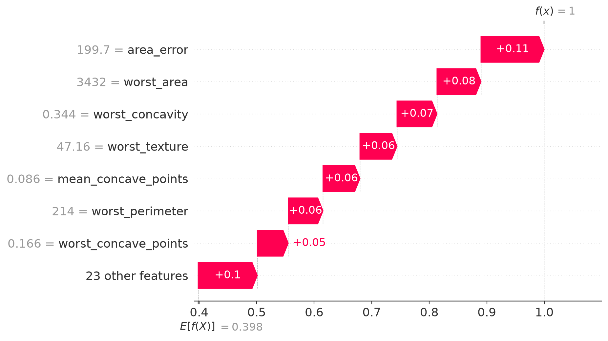
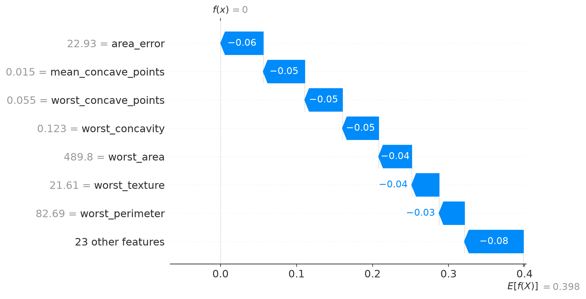
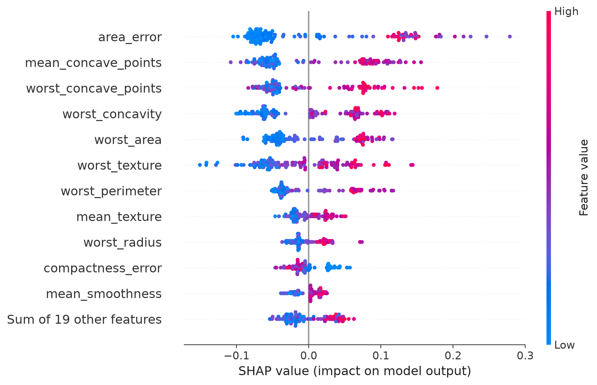
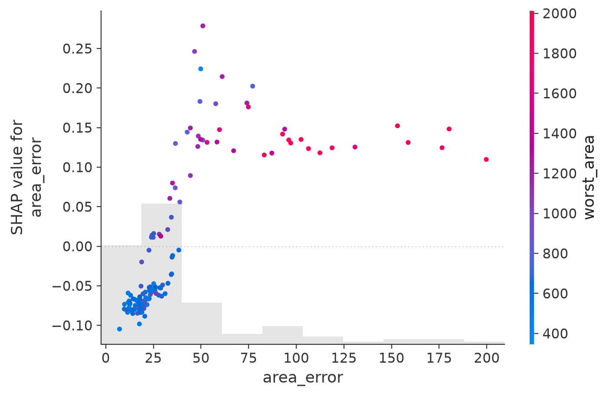

4 Exercises
4.1 Data and setup
We use the Breast Cancer Wisconsin (Diagnostic) dataset. It contains 569 observations and 30 measurements taken from images of breast-mass samples. The outcome is malignant: 1 means malignant and 0 means benign.
The feature names follow a pattern. Ten properties, such as radius, texture, area, and concavity, are each summarized by their mean, standard error, and a “worst” value (the mean of the three largest measurements). Names ending in _error, such as area_error, refer to a standard error; they are not data-quality warnings. Some columns measure almost the same thing, so correlation will matter when we interpret the model.
Download these files and place them in a data folder beside your script or notebook:
- breast_cancer.csv: the observations, outcome, and fixed train/test split
- bg_general_idx.csv: 100 training-row positions for the general background
- bg_benign_idx.csv: 100 row positions for a benign-only background
The saved row positions make the examples reproducible in both languages. They also prevent us from accidentally using the first 100 training rows, which are not representative of the full training set. The files use R-style positions starting at 1, which is why the Python code subtracts 1.
import numpy as np
import pandas as pd
import xgboost as xgb
import shap
from sklearn.metrics import accuracy_score, confusion_matrix, roc_auc_score
bc = pd.read_csv("data/breast_cancer.csv")
feature_cols = [c for c in bc.columns if c not in ("malignant", "split")]
train = bc[bc["split"] == "train"].reset_index(drop=True)
test = bc[bc["split"] == "test"].reset_index(drop=True)
print(f"{len(bc)} observations, {len(feature_cols)} features")
print(f"{len(train)} training rows, {len(test)} test rows")569 observations, 30 features
441 training rows, 128 test rowslibrary(xgboost)
library(kernelshap)
library(shapviz)
bc <- read.csv("data/breast_cancer.csv")
feature_cols <- setdiff(names(bc), c("malignant", "split"))
train <- bc[bc$split == "train", ]
test <- bc[bc$split == "test", ]
cat(nrow(bc), "observations,", length(feature_cols), "features\n")
cat(nrow(train), "training rows,", nrow(test), "test rows\n")569 observations, 30 features
441 training rows, 128 test rows4.2 1. Check the model before explaining it
Fit an XGBoost classifier using all 30 features. On the test set, calculate the AUC, accuracy, and confusion matrix.
The model below uses shallow trees and a modest learning rate. With only 441 training observations, a much more flexible model could fit the training data well without generalizing well.
clf = xgb.XGBClassifier(
n_estimators=300,
max_depth=3,
learning_rate=0.05,
random_state=0,
eval_metric="logloss",
)
clf.fit(train[feature_cols], train["malignant"])
proba = clf.predict_proba(test[feature_cols])[:, 1]
pred_label = (proba >= 0.5).astype(int)
print("test AUC:", round(roc_auc_score(test["malignant"], proba), 4))
print("test accuracy:", round(accuracy_score(test["malignant"], pred_label), 4))
print("rows are actual; columns are predicted")
print(confusion_matrix(test["malignant"], pred_label))test AUC: 0.9898
test accuracy: 0.9453
rows are actual; columns are predicted
[[76 4]
[ 3 45]]dtrain <- xgb.DMatrix(
data = as.matrix(train[, feature_cols]),
label = train$malignant
)
fit_clf <- xgb.train(
params = list(
max_depth = 3,
eta = 0.05,
objective = "binary:logistic",
eval_metric = "logloss"
),
data = dtrain,
nrounds = 300
)
proba <- predict(fit_clf, as.matrix(test[, feature_cols]))
pred_label <- as.integer(proba >= 0.5)
auc <- function(y, p) {
ranks <- rank(p)
n1 <- sum(y == 1)
n0 <- sum(y == 0)
(sum(ranks[y == 1]) - n1 * (n1 + 1) / 2) / (n1 * n0)
}
cat("test AUC:", round(auc(test$malignant, proba), 4), "\n")
cat("test accuracy:", round(mean(pred_label == test$malignant), 4), "\n")
print(table(actual = test$malignant, predicted = pred_label))test AUC: 0.9898
test accuracy: 0.9453
predicted
actual 0 1
0 76 4
1 3 45The model separates the two classes well on this particular test set: its AUC is 0.99, and it misclassifies 7 of 128 observations. That makes the model worth examining, but it does not make it clinically validated. SHAP will explain this fitted model; it will not provide another test of the model’s quality.
4.3 2. Explain two contrasting predictions
Compute probability-scale SHAP values using the saved general background. First check additivity: the baseline plus one row’s 30 SHAP values should recover its predicted probability. Then compare the test observations with the highest and lowest predicted probabilities.
On the probability scale, a SHAP value of +0.10 adds about 0.10 to the model’s predicted probability relative to the background. It is not a statement that the feature increases a patient’s medical risk by 10 percent.
Python uses TreeExplainer, a fast method designed for tree models. Native XGBoost SHAP in R reports values on the raw-margin scale, so the R solution uses the model-agnostic kernelshap() function to stay on the probability scale. It may take a few minutes and, with 30 features, uses an approximation. Small differences between the R and Python values are therefore expected; both solutions use the same background and explain the same output scale.
bg_idx = pd.read_csv("data/bg_general_idx.csv")["idx"].to_numpy() - 1
background = train[feature_cols].iloc[bg_idx]
explainer = shap.TreeExplainer(
clf,
data=background,
model_output="probability",
)
explanation = explainer(test[feature_cols])
reconstructed = explanation.base_values + explanation.values.sum(axis=1)
print("SHAP matrix:", explanation.values.shape)
print("baseline:", round(float(explanation.base_values[0]), 4))
print("largest additivity error:", np.max(np.abs(reconstructed - proba)))
row_high = int(np.argmax(proba))
row_low = int(np.argmin(proba))
for label, row in [("high-probability", row_high), ("low-probability", row_low)]:
print(f"\n{label} example: probability = {proba[row]:.4f}")
top = np.argsort(-np.abs(explanation.values[row]))[:5]
for i in top:
print(
f" {feature_cols[i]}: value={test.loc[row, feature_cols[i]]:.3f}, "
f"SHAP={explanation.values[row, i]:+.4f}"
)
shap.plots.waterfall(explanation[row_high])
shap.plots.waterfall(explanation[row_low])SHAP matrix: (128, 30)
baseline: 0.3984
largest additivity error: 1.0446954856746515e-07
high-probability example: probability = 0.9997
area_error: value=199.700, SHAP=+0.1097
worst_area: value=3432.000, SHAP=+0.0765
worst_concavity: value=0.344, SHAP=+0.0695
worst_texture: value=47.160, SHAP=+0.0644
mean_concave_points: value=0.086, SHAP=+0.0642
low-probability example: probability = 0.0002
area_error: value=22.930, SHAP=-0.0560
mean_concave_points: value=0.015, SHAP=-0.0546
worst_concave_points: value=0.055, SHAP=-0.0496
worst_concavity: value=0.123, SHAP=-0.0476
worst_area: value=489.800, SHAP=-0.0435pred_fun_prob <- function(model, X) {
predict(model, xgboost::xgb.DMatrix(data.matrix(X)))
}
bg_idx <- read.csv("data/bg_general_idx.csv")$idx
background <- train[bg_idx, feature_cols]
set.seed(0)
ks <- kernelshap(
fit_clf,
X = test[, feature_cols],
bg_X = background,
pred_fun = pred_fun_prob,
verbose = FALSE
)
shp <- shapviz(ks)
reconstructed <- shp$baseline + rowSums(shp$S)
cat("SHAP matrix:", dim(shp$S), "\n")
cat("baseline:", round(shp$baseline, 4), "\n")
cat("largest additivity error:", max(abs(reconstructed - proba)), "\n")
row_high <- which.max(proba)
row_low <- which.min(proba)
for (label in c("high-probability", "low-probability")) {
row <- if (label == "high-probability") row_high else row_low
s <- shp$S[row, ]
top <- order(abs(s), decreasing = TRUE)[1:5]
cat(sprintf("\n%s example: probability = %.4f\n", label, proba[row]))
for (name in names(s)[top]) {
cat(sprintf(
" %s: value=%.3f, SHAP=%+.4f\n",
name, test[row, name], s[name]
))
}
}
sv_waterfall(shp, row_id = row_high)
sv_waterfall(shp, row_id = row_low)SHAP matrix: 128 30
baseline: 0.3984
largest additivity error: 2.220446e-16
high-probability example: probability = 0.9997
area_error: value=199.700, SHAP=+0.1358
worst_texture: value=47.160, SHAP=+0.0684
mean_concave_points: value=0.086, SHAP=+0.0663
worst_area: value=3432.000, SHAP=+0.0654
worst_concavity: value=0.344, SHAP=+0.0622
low-probability example: probability = 0.0002
area_error: value=22.930, SHAP=-0.0575
mean_concave_points: value=0.015, SHAP=-0.0558
worst_concavity: value=0.123, SHAP=-0.0548
worst_concave_points: value=0.055, SHAP=-0.0443
worst_area: value=489.800, SHAP=-0.0429The SHAP matrix has 128 rows, one for each test observation, and 30 columns, one for each feature. Its baseline is 0.398: the model’s average predicted probability over the general background. The tiny residual confirms that the values add up to the prediction. It does not, by itself, tell us whether every estimated contribution is accurate.
The figures below come from the Python solution. The R plots tell the same overall story, although individual bar lengths differ slightly because the explainers use different algorithms.


A waterfall plot begins at the background prediction, shown at the bottom, and ends at the observation’s prediction, shown at the top. Each bar is one step between those points; its length shows the size of the contribution.
In Figure 4.1, every displayed contribution pushes the probability upward from 0.398 to almost 1. The largest step comes from area_error, whose observed value is 199.7. In Figure 4.2, the same broad group of features pushes in the other direction. Here area_error is 22.93, and its contribution is negative. The model is using similar measurements for both predictions, but their values place the observations on opposite sides of its learned patterns.
4.4 3. Look across the whole test set
Create a beeswarm plot for the test set and a dependence plot for area_error. Use worst_area to color the dependence plot. What do the plots say about direction, spread, and possible thresholds in the fitted model?
mean_abs = np.abs(explanation.values).mean(axis=0)
top = sorted(zip(feature_cols, mean_abs), key=lambda x: -x[1])[:7]
for name, value in top:
print(f"{name}: {value:.4f}")
shap.plots.beeswarm(explanation)
shap.plots.scatter(
explanation[:, "area_error"],
color=explanation[:, "worst_area"],
)area_error: 0.0863
mean_concave_points: 0.0688
worst_concave_points: 0.0606
worst_concavity: 0.0600
worst_area: 0.0518
worst_texture: 0.0515
worst_perimeter: 0.0452mean_abs <- colMeans(abs(shp$S))
print(round(sort(mean_abs, decreasing = TRUE)[1:7], 4))
sv_importance(shp, kind = "beeswarm")
sv_dependence(shp, v = "area_error", color_var = "worst_area") area_error mean_concave_points worst_concavity
0.0953 0.0681 0.0614
worst_concave_points worst_texture worst_area
0.0591 0.0548 0.0493
worst_perimeter
0.0427
In Figure 4.3, each dot is one test observation. Its horizontal position is the feature’s contribution to the predicted probability: left lowers the prediction, right raises it. Color shows the observed feature value, from low in blue to high in pink. The rows are ordered by average absolute contribution.
The leading rows have a clear color split. High values of area_error, mean_concave_points, and several “worst” measurements tend to push predictions toward malignant; low values tend to push them toward benign. The horizontal spread also matters: area_error can move a prediction much farther than features near the bottom of the plot. This is a summary of model behavior across these 128 observations, not a ranking of biological causes.
The printed value 0.0863 for area_error is its average absolute contribution on the probability scale. It is not an 8.63 percent share of the model’s total importance.

In Figure 4.4, each dot is again one observation, but now the axes focus on a single feature. Small area_error values mostly contribute about \(-0.05\) to \(-0.10\). The contribution rises sharply around 30 to 50 and is positive above that range. The shape looks more like a threshold learned by the trees than a straight line.
The pinker points generally appear at larger area_error values because worst_area is related to it. The plot may suggest interaction or shared information, but it does not isolate a biological effect or establish a clinical cutoff.